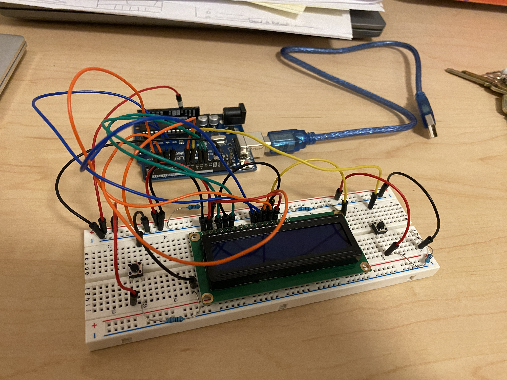
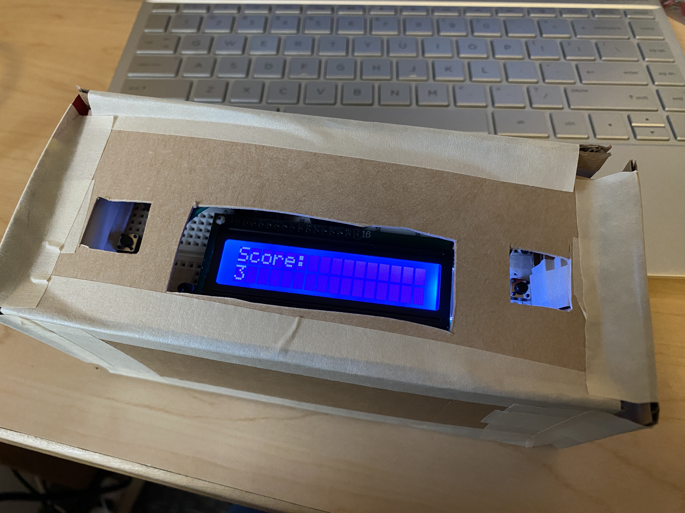
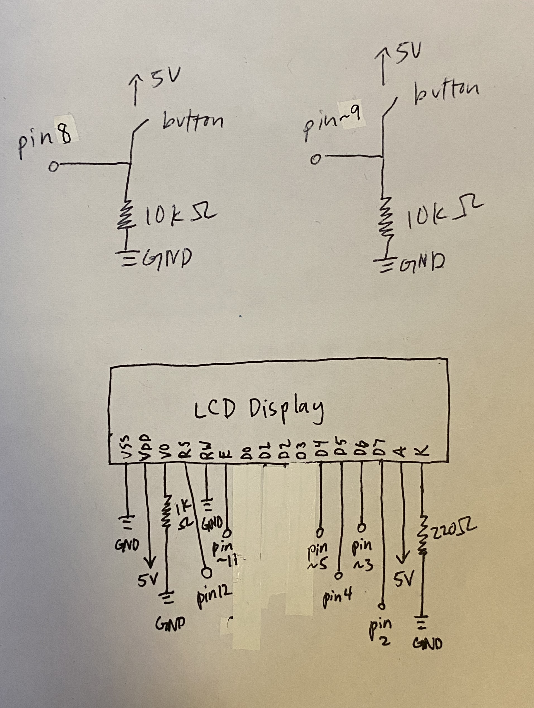

Yuming's Final Project Documentation!
Concept
For this project I created a 2D endless runner paired with a handheld controller. The buttons are used to make the player jump or end the game and the score is shown on an LCD display. The motivation and inspiration came from the game itself which I made for HCDE 438 and I wanted to create a more interesting way to play the game besides pressing the space bar.
Demo Video
https://youtu.be/98Dhi-L5ccMTechnical Writeup
These are all the materials I used: p5 game, Arduino, breadboard, 2 buttons, LCD display, wires & resistors, cardboard, tape
This is the circuit that I built with two buttons and an LCD display.
This is what my controller looked like after it was packaged with cardboard and tape. I stacked the breadboard and Arduino against each other and I put small boxes on the inside of the outer box to make sure the inner components would be supported.
These are my schematics. I picked a 10k resistor for the two buttons so that we will measure 0V and I picked a 220 ohm resistor for the LCD display to limit current through the backlight and also picked a 10k ohm resistor with potentiometer as suggested by the Arduino Documentation.

This gif shows that the controller can be used to play the game. In the demo video above you can see more clearly that the left button makes the player jump, the right button ends the game, and the LCD display shows the score.

This gif shows what the game looks like.
Code
Here is my Arduino code:
#include
// initialize the library with the numbers of the interface pins
LiquidCrystal lcd(12, 11, 5, 4, 3, 2);
int score = 0;
void setup() {
lcd.begin(16, 2); // set up the LCD's number of columns and rows:
Serial.begin(9600); // set up connection to serial monitor
Serial.setTimeout(10); // set the timeout for parseInt
pinMode(8, INPUT); // set up left button as input
pinMode(9, INPUT); // set up right button as input
}
void loop() {
lcd.setCursor(0, 0); // set the cursor to column 0, line 0
lcd.print("Score:"); // print the message at line 0
lcd.setCursor(0, 1); // set the cursor to column 0, line 1
if (Serial.available() > 0) { // if there's serial data
int inByte = Serial.read(); // read it
score = inByte; // set the score
Serial.write(inByte); // send it back out as raw binary data
lcd.print(inByte); // use it to set current score on LCD
}
int button1 = digitalRead(8); // get reading from left button
int button2 = digitalRead(9); // get reading from right button
Serial.print("["); // opening bracket of array
Serial.print(button1); // reading from left button
Serial.print(","); // comma to seperate array values
Serial.print(button2); // reading from right button
Serial.println("]"); // closing bracket of array and end line
delay(10); // arbitrary delay to limit data to serial port
}
Here is my p5.js code from sketch.js:
var serial; // variable to hold an instance of the serialport library
var portName = 'COM3'; //rename to the name of your port
var jump; //some data coming in over serial! (left button)
var die; //some data coming in over serial! (right button)
let player; // variable for player
let blobs = []; // array for obstacles
let score = 0; // score counter
let highScore = 0;
let minScore = 0; // minimum score counter
let playerSprite; // sprite of player
let obstacleSprite; // sprite of obstacle
var ground, gameOverImg; // variable for ground and game over sprites
function preload() {
playerSprite = loadImage("box cat.PNG"); // load player image onto player sprite
obstacleSprite = loadImage("1pot.PNG"); // load obstacle image onto obstacle sprite
backImage = loadImage("background.PNG"); // load background image onto background
groundImage = loadImage("ground.PNG"); // load ground image onto ground sprite
gameOverImg = loadImage("game over black.png") // load game over image onto game over sprite
}
function setup() {
createCanvas(800, 300);
serial = new p5.SerialPort(); // make a new instance of the serialport library
serial.on('list', printList); // set a callback function for the serialport list event
serial.on('connected', serverConnected); // callback for connecting to the server
serial.on('open', portOpen); // callback for the port opening
serial.on('data', serialEvent); // callback for when new data arrives
serial.on('error', serialError); // callback for errors
serial.on('close', portClose); // callback for the port closing
serial.list(); // list the serial ports
serial.open(portName); // open a serial port
// create sprites for following variables:
player = new Player(210, 236, 1920, 800, playerSprite);
ground = createSprite(width, 54, width, 40);
ground.addImage(groundImage);
gameOver = createSprite(300,120, 193, 200);
gameOver.addImage(gameOverImg);
}
// get the list of ports:
function printList(portList) {
// portList is an array of serial port names
for (var i = 0; i < portList.length; i++) {
// Display the list the console:
print(i + " " + portList[i]);
}
}
function serverConnected() {
print('connected to server.'); // prints when server is connected
}
function portOpen() {
print('the serial port opened.') // prints when serial port is opened
}
function serialError(err) {
print(err);
}
function portClose() {
print('The serial port closed.'); // prints when serial port is closed
}
function serialEvent() {
if (serial.available()) {
var datastring = serial.readLine(); // reading some serial
var newarray; // array to store reading from serial
try {
newarray = JSON.parse(datastring); // can we parse the serial
if (typeof newarray == 'object') { // checks of serial reading is an object
dataarray = newarray; // records value of serial reading
jump = dataarray[0]; // stores value from left button
die = dataarray[1]; // stores value from right button
}
console.log("got back " + datastring); // logs reading from serial
} catch(err) {
// got something that's not a json
}
}
}
function draw() {
serial.write(score); // send score to controller
background(backImage); // set backgound image
gameOver.visible = false; // make game over sprite invisible
if (jump == 1) {
player.jump(); // makes player jump if left button is pressed
}
if (die == 1) {
gameOver.visible = true; // makes game over sprite visible if right button is pressed
noLoop(); // ends game if right button is pressed
}
score += 0.05; // increments score
fill(255, 255, 255); // sets score text to be white
textSize(30); // sets size of score text
text(round(score), 10, 32); // sets style of score text
player.show(); // calls show function in player class
player.move(); // calls move function in player class
if (random(1) < 0.03) { // randomizes when new obstacles spawn
if (score > minScore) { // only if score is continuing to increase
blobs.push(new Blob(obstacleSprite)); // creates new obstacle from blob class
minScore = score + 2 + random(1); // updates minScore
}
}
for (var blob of blobs) { // interates through obstacles in obstacle array
blob.setSpeed(8 + sqrt(score) / 5); // sets speed of obstacle
blob.move(); // calls move function in blob class
blob.show(); // calls show function in blob class
if (player.hits(blob)) { // if player hits obstacle, the game ends
gameOver.visible = true; // makes the gave over sprite visible
noLoop(); // ends the game
}
if (blob.getX() < -50) { // if obstacle is goes off of the screen
blobs.shift(); // shift obstacle off
print("Removed"); // prints "removed"
}
}
drawSprites(); // displays sprites
}
Here is my p5.js code from player.js:
class Player {
// constructs player object by setting size, position, and sprite
constructor(x, y, width, height, image){
this.size = 50;
this.x = 50;
this.y = height - this.size;
this.vy = 0;
this.gravity = 1.5;
this.sprite = createSprite(x, y, width, height);
this.sprite.addImage(image);
this.sprite.scale = 0.3;
}
jump(){
// makes the player jump
if (this.sprite.overlap(ground)) {
this.vy = -23;
}
}
move(){
// moves the character
this.y += this.vy;
this.vy += this.gravity;
this.y = constrain(this.y, 0, height - this.size);
this.sprite.position.y = this.y;
}
show(){
// shows the player sprite
drawSprites();
}
hits(blob){
// collides with obstacle
return collideLineRect(blob.x, height, blob.x + blob.size / 2, blob.y, this.x + 79, this.y, this.size, this.size);
}
}
Here is my p5.js code from blob.js:
class Blob {
// constructs obstacle object by setting size, position, and sprite
constructor(image){
this.size = 50;
this.x = width;
this.y = height - this.size - 50;
this.speed = 8;
this.sprite = createSprite(this.x, this.y, width, height);
this.sprite.addImage(image);
this.sprite.scale = 0.3;
}
setSpeed(speed){
this.speed = speed; // sets speed of obstacle
}
getX(){
return this.x; // returns x position
}
move(){
this.x -= this.speed; // sets speed of obstacle
}
show(){
// shows the obstacle sprite
this.sprite.position.x = this.x;
drawSprites();
}
}